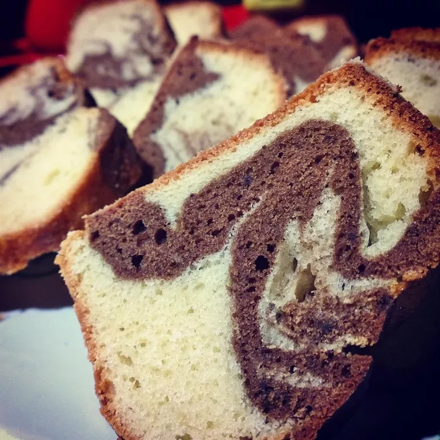

German Marble Cake

Description
This is a lovely cake with the taste of almond and chocolate and it is almost like a pound
cake.
Ingredients
- 1 cup butter
- 1 ½ cups white sugar
- 4 eggs
- 1 cup milk
- 1 teaspoon almond extract
- 3 ¼ cups all-purpose flour
- 1 tablespoon baking powder
- ⅛ teaspoon salt
- ¼ cup unsweetened cocoa powder
- 3 tablespoons dark rum
Steps
- Preheat oven to 350 degrees F (175 degrees C). Grease and flour one 10 inch tube pan.
- In a large bowl, cream the butter with the sugar. Beat in the eggs, then the milk
and almond extract.
- In another bowl, stir together the flour, baking powder and salt. Beat the flour
mixture into the creamed mixture. Turn half of the batter into another bowl and stir
in the cocoa and rum.
- Layer the light and dark batters by large spoonfuls and then swirl slightly with a
knife.
- Bake the cake in at 350 degree F (175 degree C) for about 70 minutes, or until it
tests done with a toothpick. Transfer to a rack to cool. Makes about 14 to 16 servings.